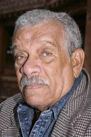

.Derek Walcott [1930]
Trên bản đồ thế giới, đất nước hòn đảo Saint Lucia chỉ là một đảo nhỏ lốm đốm những rừng cọ lộng gió nằm gần đảo Martinique, giữa Puerto Rico và Venezuela với chiều dài 40 km và tổng diện tích 616km2, hòn đảo có những con sông ngắn nhỏ, những thung lũng, những bãi biển đẹp với dân số 15 vạn người sống dựa vào nghề trồng chuối và ngành du lịch.
Nhưng đất nước hòn đảo này còn cần được biết tới với những giải Nobel mà nó giành được: Trong vòng hơn một thập kỷ, hai giải Nobel đã lọt vào tay người dân của hòn đảo bé nhỏ này. Năm 1979 Arthur Lewis, tước hiệp sĩ do Vương quốc Anh phong tặng và nay đã quá cố, được tặng giải Nobel về kinh tế. Và năm 1992 nhà thơ Derek Walcott [Sinh 1930] đoạt giải Nobel văn học.
Cả hai đều được đào tạo từ ngôi trường cao đẳng St Mary ở Castries, thủ đô nước đảo. Cả vị thủ tướng Saint Lucia hiện nay John Compton cũng là học sinh cũ của trường. Micheal Mondesir, ông hiệu trưởng hiện nay, kể rằng tin Walcott được giải Nobel đã lan truyền khắp đảo nhanh đến mức vào sáng hôm thứ năm 8/10/1992, trước giờ học sinh vào học, người ta thấy chẳng cần thiết phải công bố cái tin quan trọng này nữa. Đối với vị hiệu trưởng này, cả Lewis và Walcott đều là người quen, và nhiều học sinh chẳng lạ gì nhà thơ được giải Nobel 92.
Phản ứng đầu tiên của Walcott khi biết tin này là câu nói thốt ra thật đơn giản: “Tại sao lại là tôi nhỉ?”. Bởi lẽ, rốt cục thì mặc dầu ông được giới phê bình văn học ca ngợi, độc giả của ông ngoài nước là tương đối ít và hàng triệu độc giả yêu văn học chưa hề quen thuộc tên tuổi của ông.
Vào buổi sáng thứ năm ấy, Walcott thức dậy trước lúc bình minh để vật lộn với một câu thơ làm ông lấn bấn suốt nhiều ngày. Dậy sớm là thói quen của người dân đảo, khi mà khí trời mát mẻ và yên tĩnh. Và trong khi đang viết thì có giây nói gọi đến báo tin này.
Walcott, một nhà thơ có tiếng nói nhỏ nhẹ, và là người được mệnh danh là “người viết ai điếu tỉnh lẻ cho sự suy tàn của một đế quốc cũ”, sáng hôm ấy đã cho phép mình đóng vai long trọng của kẻ nổi tiếng tức thì. Ông tiếp các nhà báo, các phóng viên ảnh, mời họ đến quán bán bánh rán bên cạnh uống cà phê và còn tổ chức một cuộc họp báo chuẩn bị vội vàng trong bộ quần áo học giả chỉnh tề. Nhưng thực ra ông không thấy thoải mái với cái danh hiệu mới-một vai mà ông chưa hề đóng và ông tự thổ lộ cảm thấy như một “con người gỗ và một nghị sĩ hạng ba”. Khi có người hỏi ông rằng nếu các sinh viên học viết văn của ông tại trường đại học Boston hỏi đến bí quyết thành công của ông, ông trả lời: “Tôi sẽ đá họ ra khỏi phòng vì chẳng có bí quyết gì cả”. Trước giải Nobel, ông đã được tặng giải “Tài năng” của Tổ chức John D. và Catherine T.Marc Arthur năm 1981 và đã cho xuất bản 8 tập thơ. Giám đốc Nhà xuất bản thơ của ông, Jonathan Galassi, nhận xét: Ông là một trong những nhà thơ lớn hiện nay đã sử dụng truyền thống của thơ ca Anh. Thơ ông rất trữ tình và giàu âm điệu. Galassi cũng là người xuất bản tập thơ mới nhất của ông Omeros, dày 323 trang năm 1990, mà người ta cho rằng Viện Hàn lâm Thụy Điển có ấn tượng rất mạnh về tập thơ này trong việc xét tặng giải cho ông.
Nhà thơ này sinh ra trên hòn đảo mà ông gọi nó giống như mảnh đất “địa đàng” là một người bị ám ảnh bởi tàn dư của chủ nghĩa thực dân ở West Indies. Ông còn nói mảnh đất này có thể vừa là Thiên đường vừa là địa ngục, và theo nhà phê bình James Atlas, những chủ đề thơ của ông là “nỗi khốn khó của những người da đen, người ngoài rìa thường trực, công dân của một hòn đảo bị ám ảnh bởi quá khứ thực dân, và tình yêu vô tận đối với hòn đảo quê hương”. Còn Walcott thì nói “tôi viết về những người dân ở West Indies đi tìm kiếm bản sắc của mình và về những tổn thất mà tinh thần thực dân gây ra cho tâm hồn con người”. Tập sử thi Omeros chẳng hạn, đã pha trộn nhãn quan của người dân West Indies với những hồi cố về những câu truyện cổ huyền bí. Omeros mà gốc từ Hy Lạp có nghĩa là Homer, đã tập hợp chủ đề mà nhà thơ quan tâm: Lịch sử của hòn đảo này, những quan hệ chủng tộc, việc di dân của người da đen từ châu Phi và một sự thiết tha với truyền thống. Khi ông nhận được giải văn học W.H.Smith ở Anh năm ngoái, các nhà phê bình đã ví ông với nhà thơ Homer của Hy Lạp cổ đại. Trước đó năm 1988, ông là công dân đầu tiên trong khối liên hiệp Anh được giải “Huy chương vàng cho Thơ” do Nữ Hoàng Anh trao tặng. Joseph Brodsky, nhà thơ Mỹ được giải Nobel trước ông, đã gọi ông là “Nhà thơ tiếng Anh hay nhất” hiện nay.
Khi được hỏi làm sao mà hòn đảo bé xíu Saint Lucia lại có thể sản sinh ra những hai người đoạt giải thưởng Nobel, ông không ngần ngại trả lời: “Chính là do thức ăn đấy!”.
Dẫu sao thì Walcott vẫn hằng ao ước có một ngôi nhà và một thư phòng ở đảo Saint Lucia, nơi chôn rau cắt rốn mà ông thường trở về trong khi thường trú ở Trinidad và dạy học ở trường Đại học Boston (Mỹ). Đấy là một nhà thơ không bao giờ chối bỏ cội nguồn và trở nên vĩ đại.